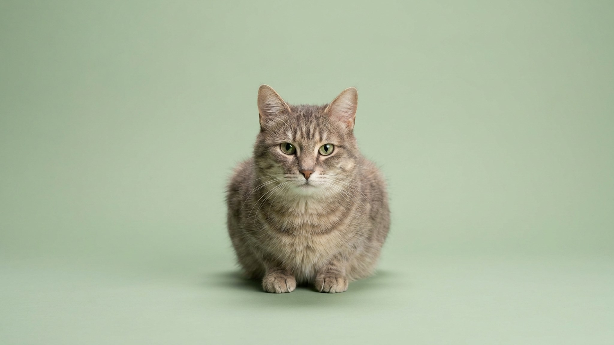

Кошка замечает мышь у плинтуса раньше, чем вы успели поднять голову. При этом в ваш прямой взгляд она почти не смотрит, а розовый мяч и оранжевый выглядят для неё одинаково блёкло. Зрение кошки оптимизировано для охоты в сумерках, а не для разглядывания лиц. Вот как оно устроено.
🐾 Хотите понять, что кошка говорит вам?
Опишите ситуацию или пришлите видео в AnimaLife — AI разберёт поведение вашего питомца и подскажет, что делать. Бесплатно, ответ за минуту.
Разобрать поведение → Разобрать в MAX →
У вас iPhone? AnimaLife есть в App Store
У кошки два механизма ночного зрения. Первый: в сетчатке примерно втрое больше палочек, чем у человека. Палочки работают при слабом освещении и фиксируют движение. Второй: за сетчаткой находится тапетум, зеркальный слой клеток. Он отражает свет обратно через сетчатку, давая палочкам второй шанс уловить фотон. Именно тапетум светится на фотографиях при вспышке.
В результате кошка видит при освещении, которое для нас выглядит почти полной темнотой. При абсолютном нуле света она всё равно слепа — тапетум усиливает, а не создаёт свет.
Кошка различает цвета, но с ограничениями. У человека три типа колбочек (красный, зелёный, синий спектр). У кошки два — синий и зелёный. Красные и оранжевые оттенки она воспринимает тускло, скорее как серо-бурые. Синий и фиолетовый видит хорошо.
Практический вывод: если хотите привлечь внимание кошки игрушкой, синие и зелёные тона работают лучше красных. Движение при этом важнее цвета — кошка заметит любую движущуюся точку раньше, чем оценит её окраску.
Поле зрения у кошки около 200 градусов — шире, чем у человека (180 градусов). Зона бинокулярного зрения (где оба глаза видят одно и то же) примерно 100–120 градусов. Это даёт хорошую оценку расстояния при прыжке.
Острота зрения при дневном свете заметно ниже человеческой. Кошка видит на 20 футах то, что человек видит на 100–200. Статичные предметы вблизи она различает хуже, чем человек. Зато любое движение на периферии она замечает мгновенно — туда и направлена охотничья эволюция.
Вертикальный щелевидный зрачок кошки может сужаться почти до нитки и расширяться до большого круга. Диапазон регуляции света у него в 135–300 раз шире, чем у круглого зрачка человека. Это позволяет работать и на ярком солнце, и в сумерках без потери качества.
Зрачок расширяется не только при низком свете, но и при возбуждении, страхе, агрессии. По ширине зрачка удобно считывать эмоциональное состояние кошки, особенно если учесть освещение в комнате.
Материал носит информационный характер и не заменяет очную консультацию ветеринара.
🐾 У вашей кошки так же?
Расскажите в AnimaLife, как ведёт себя ваш питомец, — приложение объяснит причину и даст пошаговый план. Бесплатно, без записи к специалисту.
Разобрать свой случай → Разобрать в MAX →
У вас iPhone? AnimaLife есть в App Store
🐾 Понравился разбор?
Подпишитесь на канал — каждый день разбираем по одному тревожному симптому у кошек и собак: что в пределах нормы, а когда пора к врачу. Подпишитесь, чтобы не пропустить разбор, который может спасти здоровье вашего питомца.